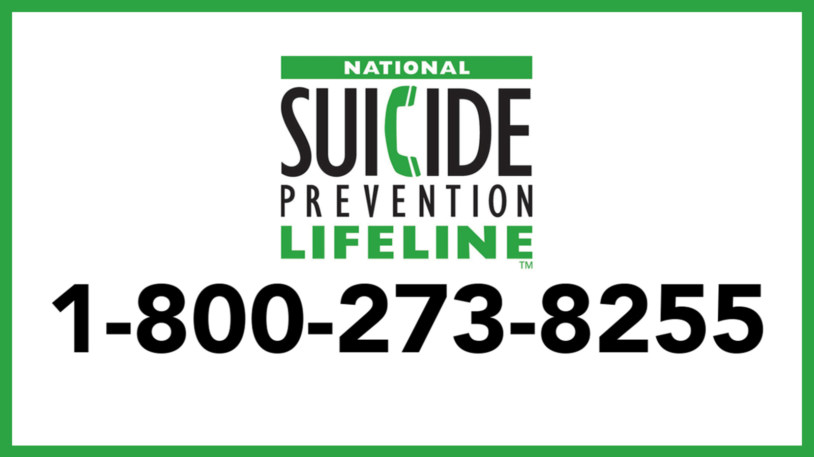

Get immediate help If you think you may hurt yourself or attempt suicide, get help right away by taking one of these actions: Call your mental health specialist. Call a suicide hotline number. In the U.S., call or text 988 to reach the 988 Suicide & Crisis Lifeline, available 24 hours a day, seven days a week or call the number proived on the page here. Source: mayo clinic
click here to read more about suicide 